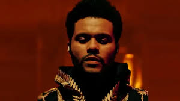

the weeknd é um dos artistas mais influentes da música pop conteporânea, conhecido por suas letras emotivas e inovadoras que misturam varios genêros músicais.
sua carreira inclui vários álbuns aclamados pela crítica e uma série de colaboracões com outros artistas famosos.
Nos últimos anos o nome do THE WEEKND tornou-se um sinônimo de sucesso estrondoso na indústria da música. ABEL TESFAYE se tornou um dos maiores fenômenos músicais na nossa geracão.
ssas são as 5 melhores mùsicas do the weekned, e as mais populares pelo mundo todo.
Com estratégias de lancamento cuidadosamente orquestradas e uma presenca onlline engajada, ele conseguiu impulsionar suas músicas para o topo da parada e melhorar sua posicão no cenário músical.
The Weeknd foi um dos primeiros artistas a compreender o poder das plataformas digitais e mídias sociais para promover sua música.
Ao longo de sua carreira, The Weeknd escolheu colaborar com uma variedade de artistas, desde figuras estabelecidas até novos talentos
Essas colaboracões nao apenas aumentou sua base de fãs em um nïvel absurdo, também demonstrou sua versatilidade e adaptabilidade no mundo da música.